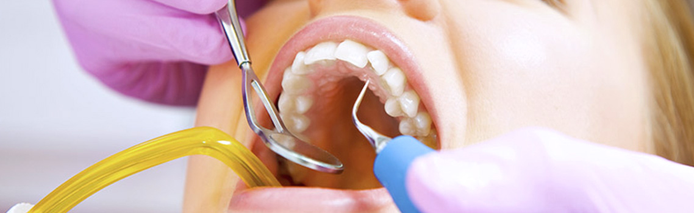
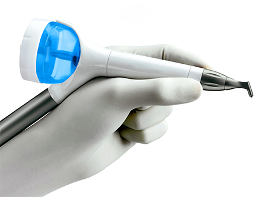
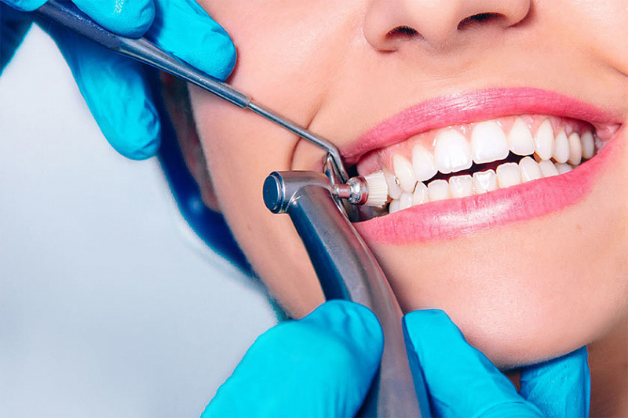

Чем опасен зубной камень и пародонтит?
В нормальном состоянии зубы покрыты тонкой защитной пленкой. К ней и цепляется зубной налет, содержащий в себе множество различных микробов и микроорганизмов, которые создают почву для кариеса и других заболеваний. В слюне также содержатся минеральные вещества, которые при соединении с зубным налетом образуют камни. Это чревато нарушением кровообращения, что может привести к болезням десен, разрушению и выпадению зубов.
Пародонтит — заболевание, поражающее околозубную ткань. Если запустить его лечение, то ткань десны станет рыхлой, под нее попадут микробы. Они являются главной причиной воспалительных процессов десен. В конечном итоге десна может загноиться, а зубы начнут расшатываться и выпадать, потому что кость тоже воспаляется.
Зубная щетка и паста далеко не так эффективны в борьбе с налетом, а избавиться от зубного камня подручными средствами просто невозможно. На помощь приходит профессиональная гигиена полости рта позволит избавиться от зубного камня. Врач, специализирующийся на чистке ротовой полости, поможет вам вылечить ткани десен, придать эмали естественный цвет, а также защитить от возникновения кариозных процессов. Специалист порекомендует метод чистки и поможет подобрать индивидуальные предметы и средства гигиены полости рта.
Этапы очистки полости рта
-
Первым делом врач-гигиенист снимает все зубные отложения с помощью ультразвукового аппарата
При воздействии ультразвука, а также воздуха в струе воды, подающейся из аппарата, камень начинает распадаться и отходит от зуба. (скейлера).
 - Потом начинается чистка зубов Air Flow от мягкого и пигментированного зубного налета. Принцип действия пескоструйного аппарата прост и безопасен: под давлением из него на поверхность зубов вместе с водой подается струя специального порошка. Смесь, в составе которой есть кальций и сода, попадает во все труднодоступные места, тщательно вычищая образовавшийся налет. 
-
Завершающим этапом чистки зубов и десен от камня и налета является полировка щеточкой с абразивной
лечебной пастой.
Это помогает зубам дольше противостоять появлению вредного налета.
После на эмаль наносится специальный фтор-лак или фтор-гель, оберегающий ее от кариеса.
Сама процедура практически безболезненна, но в отдельных случаях клиент может попросить у врача применить местную анестезию. 
Рекомендации по профессиональной гигиене полости рта
Стоматологи рекомендуют производить чистку два раза в год, однако частота проведения процедуры зависит от образа жизни человека и состояния его организма, а также наличия зубочелюстных аномалий. При наличие несъемной ортодонтической аппаратуры или ортопедических конструкций также рекомендуется проводить чистку чаще.
- острые респираторные заболевания (до выздоровления);
- бронхиальной астмы;
- наличие кардиостимулятора;
- серьезные заболевания сердца:
- ишемическая болезнь сердца (ИБС);
- инфаркт миокарда;
- инсульт;
- хроническая сердечная недостаточность;
- стенокардия;
Необходимо помнить, что подходящий именно вам курс профессиональной чистки полости рта может назначит только квалифицированный специалист. В любом случае, данная процедура заметно улучшает состояние десен, уменьшает их кровоточивость, избавляет от запаха изо рта и защищает от зубного налета, камня, кариеса и других заболеваний, связанных с полостью рта.
Профессиональная гигиеническая чистка особенно необходима курильщикам, а также любителям чая или кофе. Профессиональная чистка зубов детям особенно важна, ведь малыши большие любители сладкого.